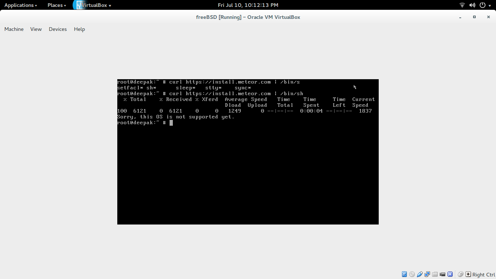
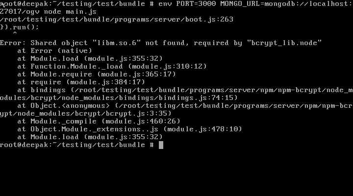

Development logs for GSoC 2015
Community Bonding Period
- Scrutinizing meteor framework.
- Getting to know more about workflow of OGV.
- Exploring bootstrap.
- Listing possibilities of production ready plan.
- Updating the production ready plan after discussions with Sean.
- Communicate with Shubham to discuss and dug the things deeper.
Coding Period
May 25
- I have decided to work with the landing page, the first and the foremost requirement.
- Studied different designing pattern.
- Developed the prototype for the landing page(roughly).
- It would consist of the 4 slides
- Customizing the header as it is less responsive.
- The first slide will be symbolizing that OGV is 3D viewer and introductory part along with the login link to login page. Little confused, with the content what to add more such that user at the first look can identify that it is a 3D viewer.
- Second page would depict the working of OGV.
- Third page confused :-/. What to add?
- Last slide would comprise the important features expressed in interactive manner.
- Footer which contains links to BRL-CAD site / blog / updates etc.
May 26
- Where models were shown that was removed from the existing one, instead an icon is created in the header, clicking of which will take us to the models page.
- Reason for doing this is such that on clicking of an icon (OGV) it takes us to the landing page and not models page.
- Make few changes in routes.js according to their functionality.
- Continuing with the creation of the landing page but facing bit problem. This problem is either due to something wrong in routes or CSS. Working on it.
May 27
- Problem rising in CSS has been resolved.
- In the landing page, out of four one is complete fully. The page is almost resposive.
- Started with the 2nd slide also, gathering stuff for that.
- The page has been post to my github account, soon will be sending the PR.
May 28
- The second slide is also complete of the landing page.
- The slide is fully responsive.
- Gathering ideas and content for the third slide.
May 29
- Slide 1 is completed. And it is fully responsive.
- Little enhancement needs to be done in all the pages and as the colour of the slide do not relate to each other so improvements are needed.
- I have added the slide to my github repo. After completing with the third slide I would send a PR and will make the changes as per the reviews.
May 30
- Final slide along with footer is also done.
- Modification have been made in colour combination. Not well satisfied. Exploring more for it.
- First slide plus sub-part of first slide is also modified.
- Almost responsive.
May 31
- Little change in color combination of landing-page.
- Looking for the cause of invalid error messages that occurs during submit button.
- Before, meteor accept only .jpg file for model image but now user can upload .jpg, .jpeg, .png file for his model that are shown in My Models tab.
1 June
- I completed the landing page and sent that for review but sean pointed out mistakes. The detail of which lies on the mailing list.
- According to the reviews given I made the improvement and I got positive review from sean about that.
- Now the most important thing of the concern is the license of the icons that are used in OGV. I'm looking for the other sites that provide the free icons so that no issues are there.
- While uploading the images, when no image was selected it didn't give any kind of error. This could be done through either adding onValid function in file or passing message in throwError. And I used throwError method for that.
2 June
- Moving towards the second milestone which is to add the loader.
- Studied the different packages to add the loader.
- Facing problems so I am studying the code and trying to understand it.
3-4 June
These two days I couldn't work much as I am suffering from viral-fever and doctor has strictly told for a bed rest. I concentrated on the loader part. I have tried using Meteor n-progress package for adding the progress bar. It worked but the progress bar is not synchronized with the backend process, the progress bar shows it completed but the backend process is still in progress. Also, I have posted the problem on Mailing List and even Inderpreet is also trying to look for it. Also, I have tried with the waitOn function but no success. Currently I am scrutinizing FSCollection and trying with the similar progress examples and will then apply a Loader. Hope to complete it the soon.
5 June
Today I again dealt with the loader but I'm quite disappointed with myself as I'm unable to implement it till now. I looked for circular-progress packages and "tomi:upload-server and tomi:upload-jquery" package. The example of this is working but their is problem in implementation as it uses it own "tomi:upload-server" whenever I use it OGV stop responding due to conflict in the names of the templates. Still working on it. Secondly, I made little improvement in the landing to send the PR.
6 June
I worked on the error part that of the notification previously, during saving if there is any error an empty box was shown with no alert message this thing has been corrected and now the proper error message is shown when the image is not uploaded correctly. Secondly, I have tasted the uplaoder using cfs progress upload the progress bar is shown but it immediately completed.
{{> FS.UploadProgressBar bootstrap=true class='progress-bar-success progress-bar-striped active' showPercent=true}}
According to me, I think something needs to be done at the backend so as to synchronize the process with the front-end. I have posted my confusion and question on BRL-CAD devel-mailing list.
7 June
- Today I decided to include the feedback form in the landing page as shubham has almost completed the back-end part of the feedback form so I thought to complete from my side too.
- I designed a wireframe for the feedback form and looked for the different ideas. to design the page.
- I have tried my best to keep the page simple and informative.
8 June
- Shubham send the PR for the feedback form but I thought to have that this page to be included in the landing page rather than making the separate template for it.
- I have also convinced shubham degrading this by telling him advantages and dis-advantages regarding this.
- Both logged In / Out user are able to fill the feedback form.
- I have designed my own icon for this purpose as there need not to be issue of copyright or license.
- I faced little problem for sending the email but now this is solved.
- The page is also responsive and I have also send the PR.
9 June
- Today I started with the basics of Three.js so as to work with issues like setting the zoom limit, camera position etc.
- Also, I worked on my fourth miltestones i.e related to the error notifications. In many of the cases no error message or not a correct error message is shown. Like the uploading a image of the incorrect format didn't show any message but now the proper error message is shown. At some places there is still a problem, continuing with that.
- Earlier the image of only .jpg format was uploaded but now .PNG and .JPEG are also the accepatable formats. This was not correctly done in the earlier commit, now it is corrected.
10 June
- Looking into error notification problem.
- All the methods already exist but there is the problem in error handling procedure, that may be due the updated version of meteor.
- I tried with the example of try-catch on updated version which successfully implemented, now working according to that.
- Also another thing I worked upon is the camera perspective. Previously, the model on the first sight viewed too large, even without any zoom in and the preview being too large was not shown completely. Now the camera perspective is set and scene shows the model correctly.
11 June
- Simple notification replaced with sAlert notification. It adds to lot many features such that the success, warning etc messages remains for particular period of time. For e.g on clicking on the embed model the notification would last for about 10 sec, so that the user can copy it also. Similarly warning and error messages would last for 8 and 4 seconds respectively and so on.
- Found bug in exception handling. Exception handling not working properly due to some missing parameter or due to improper coding. Because of this
if(err) {
throwError(err.reason)
}
not working. Looking for the root of problem.
12 June
- Done with the setting of the zoom limit. Earlier the minimum distance was zero, and the maximum distance was infinity. But now the limits are set. The minimum distance I have kept is 20 and the maximum is 10000.
- Camera position is also set now. Earlier at the first look the model shown was either much zoomed out or zoomed in that is camera position was not set properly. Now it is corrected.
- Also, I tested different .g files, and found that it doesn't work correctly for larger file sizes. On uploading it, for smaller amount of time after rendering all went well but after that my laptop froze and there was either no or very slow cursor movement. I posted a mail regarding it, that how to overcome it.
13 June
- Merged new icons made by Inderpreet with mine icons.
- Minor changes in landing page.
- Added HTML5 validation on feedback form. Meteor validations pending will do ASAP.
- Added error message if user upload file instead of .g or .obj.
- Added different view functionality to view model from different angle on keyboard button press. F for front-view, R for rear view, T for top view and B for bottom view. It's working but there is a small glitch in it, after pressing any of these button I have to zoom out little bit to get perfect view :-/. Checked at lot but didn't find any perfect solution for it. Will solve this bug ASAP.
14-15 June
- Nothing much, little busy in college paper work.
- Designing new icons for front-end page.
- Worked on feedback form validations.
16 June
- Talked on three.js IRC regarding my onKeyDown button problem. They provide me solution to make changes on few places but bad luck nothing worked for me :-/. Looking something else for this problem.
17 June
- Made header part more responsive and did proper alignment according to different screen sizes.
- I have tested the feedback page, there were little fluctuations so made them correct and now it's working fine.
- Applied validations on feedback form input fields. Facing little problem in meteor validations.
18 June
- The views set previously were not working correctly as we need to zoom it or out a little to view. There were certain conflicts in the code and scene position was not correctly set, as I was using OrbitControls as well as controlling the camera directly. Glitches has been removed now and one can properly see all the views of the model.
- To make it user friendly, by using the CSS I have designed an indicator / icon to the bottom left hand side of the model viewer page. This will, on hovering will indicate the user to switch to different views on pressing the respective keyboard keys.
19 June
- Went through work done till now. Find out minor bugs and resolved them.
- Had a meeting with Sean. I showed my work done till now. Some of the mistakes and issues were indicated by him.
- Started resolving the issues as said.
20 June
- Working on the issues.
- Now when the user logs in, view model button is shown instead of sign-up button which was shown earlier on the landing page.
- If someone navigates to the wrong / incorrect page 404 error is shown( Designing work is pending)
- Little modification in routes after log-in.
- Description is shown on the My-Models page to the new user (earlier it was empty).
- Working on the validation part of feedback form.
21-22 June
- Added safari validations in feedback form.
- Made minor changes in model viewer part.
- Working on error message which will occur if .g to .obj conversion fails. Working perfectly on console.log but facing problem in calling Meteor.call on client side. Posted mail on devel-mailing-list waiting for reply.
- Searching / Looking ideas for the design of 404 page :).
23-24 June
- Corrected 404 page path in routes.
- Done with the designing of 404 Page.
- Almost responsive.
25 June
- Nothing much, looking for the solution to set default model image when the user dose not upload any.
26-27 June
- Error message on .g to .obj conversion part started working. Right now it works only for true or false case i.e
if (.g to .obj conversion === true)
show success
else
show error
Still have to do lots of improvement on it but at later stage. Like if conversion is in progress and so on stuff.
28-29 June
- The newly designed icons have been implemented in the landing page, just minor changes need to be done.
- Due to the freeBSD support on the server, I'm learned to install freeBSD and now I'm playing with it virtually on my machine. Currently, I'm learning the steps to deploy OGV on the server.
30 June
- Wetting hands little bit more in FreeBSD. Searching for right way to install meteor both for development and for production.
1 July
- Nothing much. Solve small bugs like icon size, mobile responsive etc.
- Summarized my work https://deekysharma.wordpress.com/2015/07/01/gsoc-mid-term/
2 July
- Bug fixes.
- Changed improper alignment of image on landing page.
- Searching more about installation steps for meteor on freeBSD.
3 July
Mid term Evaluation
4-5 July
- Trying to install meteor in freeBSD in virtual environment.
- I found something strange in meteor
if [ "$UNAME" != "Linux" -a "$UNAME" != "Darwin" ] ; then
echo "Sorry, this OS is not supported."
exit 1
fi
Checking solution for this.
6-7-8 July
Nothing much, due to some dental problem going on. Just trying to list out my next milestones.
9 July
- Moving towards my next target (main one) which is to make OGV production ready.
- Downloaded freeBSD 10.1 in order to maintain consistency with BRL-CAD server freeBSD.
- Trying to install freeBSD on virtual machine. Encountering few errors / problems while installing, like
* At very first attempt it goes into restart loop.
* ntpd_initres[621]: host name not found 1.freebsd.pool.ntp.org
* make install clean pop-up an error while installing X11.
Will solve them asap.
10-11 July
Meteor installation progress on freeBSD summary:
After facing errors it tried to install freeBSD on more time but with different techniques. I went through various blogs / videos etc. but at last no luck as I'm getting same error again and again. I took approximately 3-4 hours. Then I planned to compile the source-code of freeBSD 10.1. I took 5-6 hours to get compiled in virtual-box but I faced new obstacle in my path that was the loss of internet connectivity. Hush!. Once again I tried to compile it from another tutorial, luckily this time I successfully installed freeBSD 10.1. It's a new experience for me to install OS from scratch. After installing freeBSD, I went through the basic steps that were used to install on Ubuntu. And I faced the same error which I feared of

As there is no official support for meteor on freeBSD. I searched more on this and found on post which said that one should try first cloning meteor from git and then in meteor file comment out the if condition which generates that error
if [ "$UNAME" != "Linux" -a "$UNAME" != "Darwin" ] ; then
echo "Sorry, this OS is not supported."
exit 1
fi
This failed too. Now I'm trying to create build and then compile and then install particular libraries and packages whatever etc needed. I hope this will work it not sure but confident.
12 July
Final call for surgery. Stayed at home.
13-14 July
- Solving merge conflicts in front-end branch.
- Following this post for installing meteor on freeBSD from bundle. Facing libm.so.6 error while installing meteor bundle on freeBSD. Problem still exists even after installing compact6x from ports. Looking for the solution for this.

15 July
Discuss errors / problems that I'm facing with sean on IRC. Solving them.
16-17 July
- Error regarding libm.so.6 has been solve.
- Playing with bundle part of meteor on .bz server.
- Tested bundle after installing lastest fibers but getting this error. I searched and found this could be the soultion i.e downgrade node to 0.10.31 even something same is written on meteor offical docs. http://stackoverflow.com/questions/13327088/meteor-bundle-fails-because-fibers-node-is-missing. So going to test it out.
18 July
- Nothing much, at home.
19-20 July
- Build freebsd one more time from scratch. As I was facing hell lot of errors while installing meteor bundle on freebsd so I decided to go through from scratch one more time. After installing freebsd next step is to install nodejs but on official blog of meteor it is written that current meteor bundle is tested on version 0.10.36 of nodejs so after a long-long search on google finally I'm able to install nodejs v-0.10.36.
21-22 July
Meteor bundle / Meteor tested on mongo version 2.4.x, 2.6.x version is not supported
Latest MongoDB supported by Meteor is MongoDB 2.4.x, the 2.6.x isn't supported yet by Meteor and Freebsd
Looking for the right way to install mongodb 2.4.x on freebsd.
23 July
Facing problem while installing mongodb 2.4.x. Tried to install it from binaries even by changing ports configuration but no luck. Discuss this problem on IRC. Going to install mongodb-2.6.x and check if it working or not with node version-0.10.36.
24-25 July
After failing all test / tries on freeBSD an alternative is chosen i.e Ubuntu Server 14.04 LTS virtual image. After installing and testing ubuntu server in virtual box and end result was that, it passed all test. I'm able to run OGV from host to guest. Next thing I'm working on is to make this image more secure so that there will be no security hacks.
26 July
Tested OGV links on Ubuntu Server in VM and removed minor bugs.
27 July
I discussed my problem with sean. He told me to upload the things on the server and show the work. Size of .vdi file being to large around 3-4 GB created a doubt in sean mind and he told me to debug the thing. Doing so I experience some new commands which I have never heard before. After getting the results of debugging I decided to do the things once again and side by side to note the size of all the packages that would be required to be installed.
28 July
Installing ubuntu server one more time from scratch.
29 July
Installation complete. I'll send the report about my progress to sean by email.
30-31 July
After getting reviews on email from sean my next step is to solve the problem of the files that reside in .meteor/local/db/ folder. Looking into it.
1 August
Problem regarding db folder solved now the size of OGV folder is 25MB, earlier which was 505MB. Next step is to run .vdi on the server.
2-3 August
For the purpose of testing I tried running .vdi file on the virtual machine ( Virtual machine within virtual machine :D ) and the result was that my system is dead :(. Currently I'm waiting it to recover fast.
4-5 August
Finally I got my laptop back. I tried one more time installing virtual machine within virtual machine (this time with proper settings). I set up an environment similar like .bz server and installed virtual box with --headless settings. But I faced some problem, problem is like that, that the virtual box has only 32bit of OS support not having 64bit support. Looking 64bit problem's solutions.
6 August
Looking for the 64 bit problem as it is not compatible both with freeBSD and Ubuntu Server virtual box. When I tried to create a new disk in virtual-box only 32 bit options are shown.
7-8 August
I planned to download 32-bit Ubuntu Server 14.04 LTS iso. After installing it, installed all the required requisites to run OGV and it worked from guest to host. Now going to test previous concept, VM in VM.
9-10 August
In order to run from command line I installed following packages : phpvirtualmanchine, apache2, php5 etc. so as to run virtual machine from virtual, and upload .vdi file from the browser instead of running so many command on terminal. Whenever I do so it executes upto GRUB and after that blank screen appears. Working on it.
11-12 August
Tried to upload .vdi file, completed upto 700-800 MB but after that it stops there. When I tried to do again neither scp nor ssh worked. Discussed regarding this with Erik he told me to wait for a day. Waiting... and looking for the solutions.
13 August
Meanwhile I get the solution for the above problem, I planned to solve the merge conflicts and side by side worked on the front-end.
14 August
Problem still exists, posted mail regarding that on devel-mailing list. Meanwhile, working on front-end part.
15 August
Solved problem regarding merge conflicts. PR's has been send. Now working on UI part of back-end work and refactoring and debugging code.
16 August
Approximately 70-80% of work regarding UI problem, responsiveness, duplicate tabs / code, refactoring code etc. has been solved and PR's sent. One PR accepted waiting for the rest to get merged asap.
17 August
Everything regarding front-end part almost done just left with minor things which first need to discuss with Shubham so that I can take action on it and move further.
18-19 August
I'm back to the server problem. I found vagrant tool and tried to make .vdi up through that. Vagrant got installed in couple of seconds and now I'm testing the things. Going to test on the server.
20 August
I got the ssh/scp problem resolved by Erik with his permission I got vagrant installed to. Playing with it, error encountered. Asked for the error on the IRC waiting for the reply.
21 August
Shared the problem with sean, he provided with the solution that to use command line to up .iso file. It has been successfully done but now after running this --headless command I just want some sort of connection between the remote and local machine to see it's GUI and all the process. Working on it.